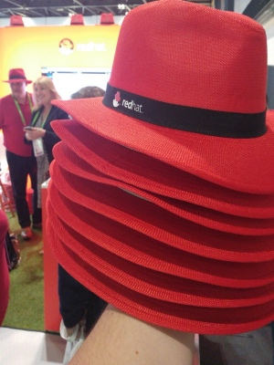

I just came back from two days Microsoft future decoded conference. I learned a lot of new things and updated knowledge on known things. I tried some really cool real life demo on Microsoft hololens and also tried hp mixed reality headset.
Open source
I also got one of the red hat from the redhat linux stand. Is anyone even imagined about a linux hat will be given in Microsoft conference few years before? Microsoft changed a lot after Satya's leadership and its truly adopting to open source now.

I would like to share some of the new things that i learned in the conference and also writing this for my future reference.
block chain
Microsoft is not only supporting all the flavors of block chain like etherum, hyperledger etc in azure but also created a new block chain framework called coco framework to minimize the effort to create a block chain based application in enterprise world and the source code of the project will be released to Github soon.
Quantum computing & DNA Storage
I also learned a lot about Quantum Computing and DNA storage which will take the computing and data storage to the next level.
DevOps
I really enjoyed all the tech deep dive sessions that i attended but i really loved the What If Cortana was your release manager? session. The speakers clearly explained how to create a really intelligent release management experience with the help of vsts api, graph API and cognitive services.
Summary
check out Microsoft view of everything that happened on day one and day two of #FutureDecoded. I really enjoyed the conference and looking forward to attend the next year conference.